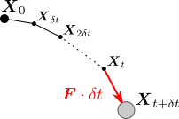
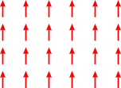
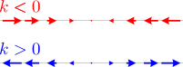
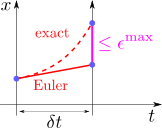
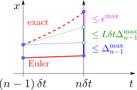

ニュートンの運動方程式：
𝑚¨𝒙=𝒇(1)
を解きたい。
式(1)を数値的に解きたい
前章では、この方程式を導いたので、これを解きたい。そうすれば、物体の運動が実際に計算できるようになる。
数値的に解きたい
この章では、式(1)の一般的な解法である数値解法について述べた後、いくつかの力の例について実際に計算を行う：3.1運動方程式の数値解法3.2力の例3.3参考オイラー法は微分方程式の解に収束する
3.1運動方程式の数値解法
ほとんどの運動方程式は、解析的には解けないので、数値的に解くことになる。この節では、もっとも単純な数値的解法であるオイラー法(2)について述べる。その数学的根拠については3節で示す。
3.1.1オイラー法による運動方程式の解法
運動方程式(1)を数値的に解く方法は、第1章のキャッチボールの場合と同じである。
計算すべき式：漸化式(2)
まず、1次近似によって得られる以下の漸化式：
[𝒙˙𝒙]𝑡+𝛿𝑡≐[𝒙˙𝒙]𝑡+[˙𝒙¨𝒙]𝑡⋅𝛿𝑡
において、運動方程式(1)を用いて未知数
¨𝒙
を消去する：
[𝒙˙𝒙]𝑡+𝛿𝑡≐[𝒙˙𝒙]𝑡+[˙𝒙𝑚−1𝒇]𝑡⋅𝛿𝑡(2)
後は、
𝑡=0
での位置
𝒙
と速度
˙𝒙
が与えられれば、それを漸化式(2)の初期値として、
𝛿𝑡
ずつ時刻
𝑡
を進めていくことができる。これにより、任意の時刻での位置
𝒙
が得られる。この式は、微分方程式を解く汎用的な方法であるオイラー法（以下の【3.1-注1】）を適用したものである。
【3.1-注1】微分方程式の数値解法：オイラー法
正規形の微分方程式：（以下の【3.1-注2】の(5)）
˙𝑿𝑡=𝑭(𝑡,𝑿𝑡)(3)

が与えられているとする。
𝑡=0
における初期値
𝑿0
が与えられた時、任意の時刻
𝑡
での
𝑿𝑡
を求めたい。
オイラー法
そのためには以下の漸化式：
𝑿𝑡+𝛿𝑡≐𝑿𝑡+𝑭(𝑡,𝑿𝑡)⋅𝛿𝑡(4)
を使って、十分に小さな時間間隔
𝛿𝑡
ずつ時刻を進めていけばよい（右図）。この計算手法を、オイラー法という。式(4)は、
𝑿𝑡+𝛿𝑡
の1次近似：
𝑿𝑡+𝛿𝑡≐𝑿𝑡+˙𝑿⋅𝛿𝑡
に式(3)を代入したものである。
補足
実用上は、オイラー法より精度の良い手法が使われる
オイラー法は単純で分かりやすい解法ではあるが、
𝛿𝑡
を相当小さくしなければ誤差が十分減らない。しかし一方で、
𝛿𝑡
を小さくしすぎると、計算量が増大することに加え、丸め誤差が問題になる。丸め誤差丸め誤差とは、コンピュータ上では実数が有限の精度しか持たないことによる誤差である。例えば、精度が15桁程度の場合、
1+10−20
は
1
に丸められてしまう。これらのため実用上は、オイラー法(4)のように
𝛿𝑡
の1次関数で近似するのではなく、より高次の多項式で近似する方法がとられる。特に、4次のルンゲ・クッタ法と呼ばれるものがよく使われ、本サイトのシミュレーションでも使用しているが、説明は割愛する。
【3.1-注2】正規形の微分方程式(5)
未知の関数
𝑿𝑡
に対する以下の形の式を、正規形の微分方程式と呼ぶ：
˙𝑿𝑡=𝑭(𝑡,𝑿𝑡)(5)
要するに、
˙𝑿=(微分を含まない項)
の形になっているということである。
𝑭
の関数形は既知、即ち、引数
(𝑡,𝑿𝑡)
が与えられれば、式(5)の右辺の値は決まるとする。
補足
多くの微分方程式が、この形に変形できる。特に、運動方程式
𝑚¨𝒙=𝒇
は2階の微分方程式であるが、以下のように正規形に変形できる：
𝑑𝑑𝑡[𝒙˙𝒙]=[˙𝒙¨𝒙]=[˙𝒙𝑚−1𝒇](6)
赤字部分を
𝑿
とおき、最後の式を
𝑭
とおけば、確かに正規形(5)になっている。
3.1.2力 𝒇 は、時間・位置・速度の関数
オイラー法(2)で運動方程式を解くには、右辺に現れる力
𝒇
の値が必要である。
𝒇
は、時間
𝑡
の関数であってもよいし、位置
𝒙
や速度
˙𝒙
の関数であってもよい：
𝒇(𝑡,𝒙,˙𝒙)
オイラー法(2)の右辺では、
𝑡,𝒙𝑡,˙𝒙𝑡
は既知なので、
𝒇
の関数形が分かっていれば、値が確定する。
-
𝑡
の依存性は、例えば
sin𝑎𝑡
のように、各時刻
𝑡
で働く力が予め分かっている状況を表す。
-
𝒙𝑡
の依存性は、例えばバネがそうであったように、その時刻
𝑡
での位置
𝒙𝑡
が分かった時点で、その
𝒙𝑡
の値に応じて働く力が決まるというものである。
-
˙𝒙𝑡
の依存性も同様で、例としては空気抵抗が挙げられる（速度が大きいほど抵抗が大きくなる）。
3.2力の例
この節では、いくつかの例に対して、シミュレーションを行う。単純なものについては解析解も示す。
3.2.1例1一定の力：式(7)

もっとも単純な例として、
𝒇
が定数の場合、即ち、時間や位置などによらず常に一定の力で押されて（引かれて）いる場合を考える。ベクトル場この
𝒇
を表したのが右図である。右図はベクトル場と呼ばれるもので、「物体をそこに置いた時にどのような力が働くか」を矢印で示したものである。図の場合、物体がどこにあっても上向きの一定の力が働くことが一目瞭然である。
運動方程式
運動方程式は、
𝑚¨𝒙=𝒇=const.(7)
である。
シミュレーション
数値計算を行うと右図のようになる。式(7)は、前章のキャッチボールの運動方程式とほとんど同じ形なので、解析解が容易に見つかる：以下の【3.2-注1】。
【3.2-注1】定数の力の場合の解析解：式(8)
運動方程式(7)の解析解
𝒙𝑡
は、
𝒙0,˙𝒙0
を初期値として、以下のようになる：
𝒙𝑡=𝒙0+𝑡˙𝒙0+𝑡22𝑚𝒇(8)
3.2.2例2変位に比例する力：式(9)
定数の次に単純なのは、力
𝑓
が
𝑥
に比例する場合である：
𝑓=𝑘𝑥

簡単のため
𝑥
軸上の1次元運動とする。この力をベクトル場で表すと、右図のようになる（上側は
𝑘<0
、下側は
𝑘>0
の場合）。
運動方程式
運動方程式は
𝑚¨𝑥=𝑘𝑥(9)
である。
シミュレーション
数値計算を行うと右図のようになる。
𝑘<0
の場合、原点に引きつけようとする力を受けて、振動する。例えば、「バネ」や「振れ幅の小さい振り子」。逆に、
𝑘>0
の場合、原点から勢いよく離れていく。例えば、「逆さまにした振り子」の頂点付近。解析解も知られており、以下の【3.2-注2】のようになる。
釣り合いの位置周辺でよく見られる
式(9)のような運動方程式は、現実にもよく現れる。それは、釣合いの点の付近である。実際、物体の位置
𝑥
が釣合いの点（＝原点とする）の付近にある場合、力
𝑓(𝑥)
が1次近似できれば、以下のように
𝑓=𝑘𝑥
の形になる：
𝑓(𝑥)≐𝑓(0)⏟=0+𝑓′(0)⋅𝑥=𝑓′(0)⋅𝑥
微分の表記
𝑓′
𝑓′
は
𝑥
での微分である：
𝑓′=𝑑𝑓𝑑𝑥
一方、これまで使ってきた
˙𝑓
という記法は、時間微分の場合にのみ使う。特に、バネの場合、比較的広い範囲でこの近似が成り立つ（以下の【3.2-注3】）。
【3.2-注2】1次の力の場合の解析解：式(10)
運動方程式(9)の解析解
𝒙𝑡
は、
𝑘
の符号によって異なり、以下のようになる：
𝑥𝑡=⎧{
{
{⎨{
{
{⎩𝑥0cos𝜔𝑡+˙𝑥0𝜔sin𝜔𝑡(𝑘<0)𝑥0cosh𝜔𝑡+˙𝑥0𝜔sinh𝜔𝑡(𝑘>0)(10)
𝑥0,˙𝑥0
はそれぞれ初期位置・初期速度であり、定数
𝜔
は以下で定義される：
𝜔≡√|𝑘|𝑚
式(10)が実際に運動方程式(9)を満たすことは、代入してみればすぐ分かる。なお、
𝑘>0
の場合に現れる
cosh,sinh
は、双曲線関数である：
cosh𝑥=𝑒𝑥+𝑒−𝑥2,sinh𝑥=𝑒𝑥−𝑒−𝑥2
【3.2-注3】フックの法則
実験によると、「バネに加えた力
𝑓
」と「バネの長さの変化
𝛿𝑙
」は、近似的に比例する。即ち、バネに固有の定数
𝑘
（＝バネ定数という）を用いて、以下が成り立つ：
|𝑓|≈𝑘|𝛿𝑙|(11)
この関係式を、フックの法則という（
𝛿𝑙<0
でもよい）。フックの法則はバネ量りに使える。実際、バネ定数
𝑘
をあらかじめ求めておけば、任意の物体を吊り下げたときの
𝛿𝑙
を読み取ることにより、その物体に働く重力
𝑓
（＝重さ）が式(11)から逆算できる。
3.2.3例3地球に働く力：式(12)
地球は、太陽の周りを回っている。即ち、太陽から重力
𝒇
を受けている。この力
𝒇
は、原点に太陽があるとして、以下の式で表せることが知られている：
𝒇=−𝐾𝒙‖𝒙‖3(12)
𝒙
は地球の位置、
𝐾
は定数である：
𝐾≈7.9×1044N⋅m2
詳しくは、重力理論編の第1章を参照。
𝒇
は、太陽の方向を向き、大きさは太陽からの距離
‖𝒙‖
の
−2
乗で減衰する。
シミュレーション
数値計算を行うと右図のようになる。軌道の形状は必ず楕円になることが知られている（無限遠に飛び去る場合を除く）。
3.2.4例4磁場中の荷電粒子に働く力：式(13)
速度に依存する力の例も見ておこう。電流や磁石は、その周囲に磁場を作る。この時、磁場の中を運動する荷電粒子は、速度
˙𝒙
に依存した力（ローレンツ力）を受けることが知られている。磁場が一様であれば、この力
𝒇
は以下のようになる：
𝒇∝⎡⎢
⎢⎣0𝐵𝑧−𝐵𝑦−𝐵𝑧0𝐵𝑥𝐵𝑦−𝐵𝑥0⎤⎥
⎥⎦˙𝒙(13)
右辺は、行列とベクトルの積。
(𝐵𝑥,𝐵𝑦,𝐵𝑧)
は磁場と呼ばれる量である（今は定数）。詳しくは、電磁力学編の第3章を参照。
シミュレーション
一様磁場の場合に数値計算を行うと、右図のようになる。
𝒇
は運動方向に垂直である。式(13)において、
˙𝒙
との内積をとればゼロになることからも分かる。
3.3参考オイラー法は微分方程式の解に収束する
この節では、オイラー法のステップ幅を小さくしていくと、解に収束することを示す。ここでは、解が存在することを仮定し、その解に収束することを示す（現実の運動を計算対象とするのであれば解は存在しているはず）。とはいえ、解が存在すること自体も、ほぼ同じ条件の下で示せる。数学的な議論のため、以下では、計算精度は無限とする。実際の計算では、計算精度が有限であることに由来する誤差が避けられないので、ステップ幅を小さくしたからと言ってどこまでも精度が良くなるわけではない。
3.3.1定理オイラー法は微分方程式の解に収束する
1階正規系の微分方程式
˙𝒙𝑡=𝒇(𝑡,𝒙𝑡)(14)
が、任意の初期値
𝒙0
の下で常に解を持つとする。この時、オイラー法でステップ幅
𝛿𝑡→0
の極限をとったものは、その解に一致する。
リプシッツ条件を満たす必要がある
ただし、これを証明するためには、「
𝒇
の変化率が有限」という（通常は満たされている）条件が必要である。即ち、ある定数
𝐿
（＝変化率の最大値）が存在して、（同一時刻
𝑡
の）任意の異なる2点
𝒙,𝒙′
に対して、
𝒇
の変化率は
𝐿
以下となる：
‖𝒇(𝑡,𝒙)−𝒇(𝑡,𝒙′)‖‖𝒙−𝒙′‖≤𝐿(15)
これをリプシッツ条件という。リプシッツ条件(15)のノルム
∥𝑥2𝒙∥
は、
∥𝑥2𝒙∥=√∑𝑥2𝑖
のようにとればよい。異なる単位が混ざった2乗和が現れるとそのままでは定義できないが、その場合は、単位を無視して数値部分だけを使えばよい（単位の取り方によって値が変わってしまうが「変化率が有限」という性質には影響しないので問題ない）。
3.3.2証明
微分方程式(14)を任意の初期値のもとで解いたときの厳密解を
𝒙exact(𝑡)
、オイラー法で得られた折れ線関数を
𝒙Euler𝛿𝑡(𝑡)
とおく（
𝛿𝑡
はオイラー法の刻み幅）。示したいのは、
𝛿𝑡→0
の時に、任意の時刻
𝑡
で両者が一致すること：
∥𝒙Euler𝛿𝑡−𝒙exact∥→0(𝛿𝑡→0)
である。そのために、左辺の最大値を見積もり（＝以下の式(19)）、それが
𝛿𝑡→0
の時にゼロになることを示せばよい。
定義1次近似での最大誤差 𝜖max

まず準備として、右図のように、「ステップ幅
𝛿𝑡
で1次近似した時」に生じ得る最大誤差
(≥0)
を
𝜖max(16)
とおくことにする。1次近似の性質により、
𝜖max
は、
(𝛿𝑡)2
のオーダーの微小量としてよい：
𝜖max𝛿𝑡→0(𝛿𝑡→0)(17)
𝜖max
はステップ幅
𝛿𝑡
だけの関数であり、
𝑡,𝒙
には依存しないとする（あらゆる起点
𝑡,𝒙
を考えた上での最大誤差を考えればよい）。
時刻 𝑡 での最大誤差を見積もる漸化式：式(18)

それでは証明に入ろう。時刻
𝑡=0
から
𝑡=𝑛𝛿𝑡
まで進めたときに生じ得る最大誤差を
Δmax𝑛
とおく。オイラー法の1ステップでの誤差は右図のように評価できるので、
Δmax𝑛
と
Δmax𝑛−1
を関係づける以下の漸化式を得る：
Δmax𝑛=(1+𝐿𝛿𝑡)Δmax𝑛−1+𝜖max(18)
- 青色を含む項は、1ステップ前の誤差を引き継いだもの。
- 1ステップ前の
𝒙
の誤差のせいで、オイラー法に使う
𝒇
にも誤差が含まれる。緑色を含む項は、その
𝒇
の誤差による影響を、リプシッツ条件(15)（分母を
Δmax𝑛−1
に置き換える）を使って評価したもの。
- マゼンタ部分は、式(16)そのもの。ここでは図式的に式(18)を導出したが、数式的に導くこともできる。詳しくは述べないが、三角不等式を使って
∥𝒙Euler𝛿𝑡(𝑛𝛿𝑡)−𝒙exact(𝑛𝛿𝑡)∥≤Δmax𝑛
の左辺を、式(18)の各項が出るように分解していけばよい。
漸化式を解いて 𝛿𝑡→0 とすれば誤差が消える
漸化式(18)は、特性方程式の方法を使って解ける。その解
Δmax𝑛
は、初期値
Δmax0=0
の下で以下のようになる：
Δmax𝑛=1𝐿𝜖max𝛿𝑡[(1+𝐿𝛿𝑡)𝑛−1]∣後のために、公式：1+𝑥≤𝑒𝑥 を代入する≤1𝐿𝜖max𝛿𝑡[𝑒𝐿𝑛𝛿𝑡−1](19)
式(19)において、
𝑡=𝑛𝛿𝑡
を一定に保ったまま
𝛿𝑡→0
の極限を取れば、式(17)により青字部分がゼロになるので、
Δmax𝑛→0
、即ち、誤差がゼロになる。よって、厳密解が存在するならば、
𝛿𝑡→0
の極限で、オイラー法はその解に収束する。
◼